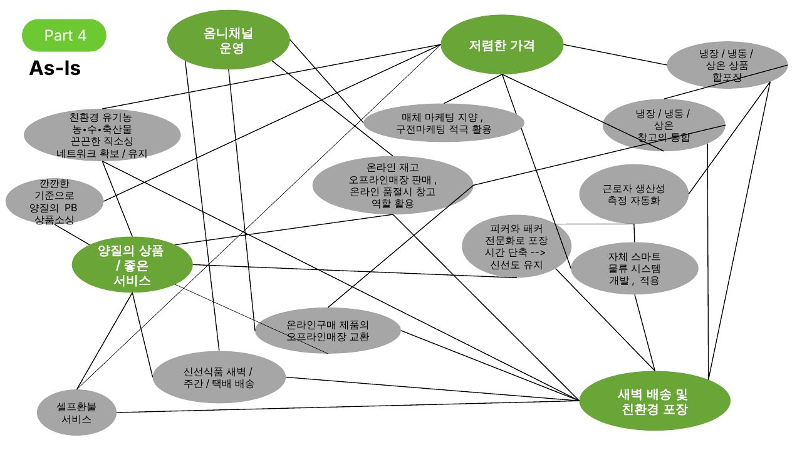
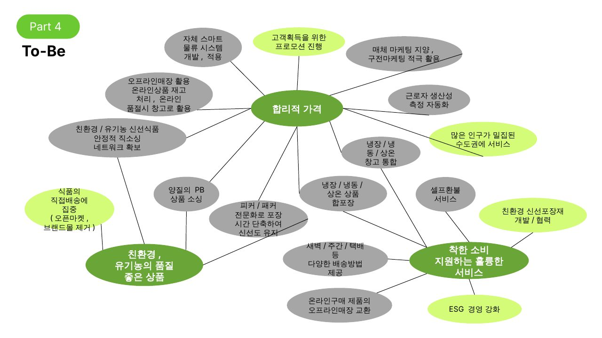

가치 제안 → 주요 활동 → 활동 간 연결 순서로 오아시스의 현재 모습과 제안하는 모습을 비교합니다.
온·오프라인 매장을 모두 운영
직소싱, 합포장, 창고 통합, 매체 광고 지양
신선도 관리, 셀프환불, PB 상품
합배송, 포장 최소화, 냉매 대신 얼린 물


발표 노트에 따르면 오아시스는 6월 17일부로 포장재 개선을 공지했습니다. 완충재와 비닐포장을 최소화하고, 보냉재를 마실 수 있는 생수병으로 대체하고 있어 오아시스의 강점을 잘 살린 방향으로 평가했습니다.